Data 200
Applied Statistical Analysis
Linear Regression — From Intuition to Diagnostics
Instructor: Aayush Regmi
In this notebook we build Linear Regression from first principles, fit
models with statsmodels, read the OLS summary line by line, run a full
battery of regression diagnostics, and finish with remedial measures
when assumptions are violated.
This notebook is meant to be read and run top to bottom. Re-run each code cell yourself and try to predict the output before looking at it.
Learning Objectives
By the end of this notebook you should be able to:
- Explain what a regression problem is and when linear regression is an appropriate tool.
- Describe the five core assumptions of linear regression (the LINEM acronym).
- Derive the Ordinary Least Squares (OLS) estimator intuitively and explain why setting the derivative to zero finds the minimum.
- Fit a multiple linear regression model with
statsmodelsand interpret every block of the OLS summary table. - Run regression diagnostics — residual plots, Q–Q plot, residual histogram, VIF, Cook's distance, Breusch–Pagan, Shapiro–Wilk, Durbin–Watson.
- Apply remedial measures (transformations, polynomial features, dropping collinear features) when diagnostics reveal problems.
1. What is a Regression Problem?
In supervised learning we are given pairs $(x_i, y_i)$ and want to learn a function $f$ such that $\hat{y} = f(x)$ is a good prediction of $y$.
| Task type | Output $y$ | Example |
|---|---|---|
| Regression | continuous number | predict house price, sales, temperature |
| Classification | discrete label | spam / not spam, cat / dog / bird |
Linear regression is the simplest, most interpretable regression model: we assume $y$ is (approximately) a straight-line / flat-plane function of the inputs plus some random noise.
Simple vs. Multiple Linear Regression
- Simple linear regression — one predictor: $$y = \beta_0 + \beta_1 x + \varepsilon$$
- Multiple linear regression — many predictors: $$y = \beta_0 + \beta_1 x_1 + \beta_2 x_2 + \dots + \beta_p x_p + \varepsilon$$
The symbol $\varepsilon$ ("epsilon") is the irreducible error — the part of $y$ that we cannot explain with the predictors.
2. Setting Up — Importing Libraries
import numpy as np
import pandas as pd
import matplotlib.pyplot as plt
import seaborn as sns
import statsmodels.api as sm
from statsmodels.stats.outliers_influence import variance_inflation_factor
from statsmodels.stats.stattools import durbin_watson
from statsmodels.stats.diagnostic import het_breuschpagan
from scipy import stats
sns.set_theme(style="whitegrid")
np.random.seed(42) # for reproducibility
3. Building Intuition — "The Best Fit Line"
Before we touch any real data, let's understand the core question that linear regression answers:
"Given a cloud of points, which straight line passes closest to all of them at the same time?"
We'll make a tiny toy dataset so we can draw lines by hand.
# Toy dataset: hours studied vs. exam score
hours = np.array([1, 2, 3, 4, 5, 6, 7, 8, 9, 10], dtype=float)
score = np.array([35, 42, 50, 55, 60, 68, 72, 78, 85, 92], dtype=float)
plt.figure(figsize=(7, 5))
plt.scatter(hours, score, s=80, color="steelblue", edgecolor="k")
plt.xlabel("Hours studied")
plt.ylabel("Exam score")
plt.title("Hours studied vs. exam score")
plt.show()
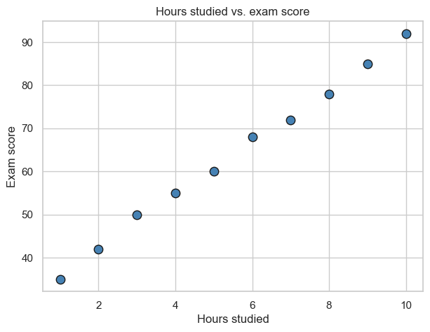
What is a residual?
Any candidate line $\hat y = \beta_0 + \beta_1 x$ will, in general, not pass through the points exactly. For every point $(x_i, y_i)$ the residual is
$$e_i = y_i - \hat{y}_i = y_i - (\beta_0 + \beta_1 x_i)$$
That is: actual minus predicted. The residual is the vertical distance from the point to the line.
Let's draw a (deliberately bad) line and show the residuals.
# A deliberately bad line
b0_bad, b1_bad = 20, 10
y_bad = b0_bad + b1_bad * hours
plt.figure(figsize=(7, 5))
plt.scatter(hours, score, s=80, color="steelblue", edgecolor="k", label="data")
plt.plot(hours, y_bad, color="red", label=f"y = {b0_bad} + {b1_bad}x (bad)")
for xi, yi, yhat in zip(hours, score, y_bad):
plt.plot([xi, xi], [yi, yhat], color="gray", linestyle="--")
plt.xlabel("Hours studied")
plt.ylabel("Exam score")
plt.title("Residuals = vertical gaps between point and line")
plt.legend()
plt.show()
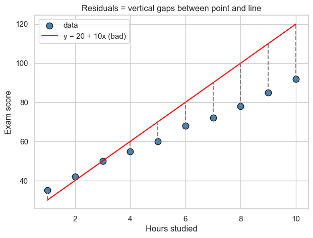
Measuring how bad a line is — Sum of Squared Errors (SSE)
We want a single number that says "how bad is this line overall?". The obvious idea is to add up all the residuals — but positive and negative residuals would cancel out. Two common fixes:
- Absolute values: $\sum_i |e_i|$ — leads to Least Absolute Deviations.
- Squares: $\sum_i e_i^2$ — leads to Ordinary Least Squares (OLS).
OLS is the classic choice because:
- Larger errors are penalized more (a residual of 10 contributes 100, not 10). The line is pulled harder towards distant points.
- The squared function is smooth and differentiable everywhere — we can use calculus to find the minimum in closed form.
- Under the Gauss–Markov assumptions, OLS is the Best Linear Unbiased Estimator (BLUE) — the most efficient linear estimator.
The quantity we minimize is
$$\text{SSE}(\beta_0, \beta_1) \;=\; \sum_{i=1}^n \bigl(y_i - \beta_0 - \beta_1 x_i\bigr)^2$$
def sse(b0, b1, x, y):
return np.sum((y - (b0 + b1 * x)) ** 2)
print(f"SSE of the bad line (b0=20, b1=10): {sse(20, 10, hours, score):.2f}")
print(f"SSE of another guess (b0=30, b1=6): {sse(30, 6, hours, score):.2f}")
print(f"SSE of a better guess (b0=27, b1=6.3): {sse(27, 6.3, hours, score):.2f}")
SSE of the bad line (b0=20, b1=10): 2515.00
SSE of another guess (b0=30, b1=6): 15.00
SSE of a better guess (b0=27, b1=6.3): 52.65
4. Deriving OLS — Why the Derivative Equals Zero at the Minimum
SSE is a function of $\beta_0$ and $\beta_1$. If we fix $\beta_0$ for a moment and vary $\beta_1$, the SSE traces out a parabola (a bowl shape).
We want the bottom of the bowl. How do we find it?
The core calculus idea
Look at a smooth curve. At every point the curve has a slope (derivative).
- If the slope is positive, the curve is still going up — we could move left and get a smaller value. So this is not yet the minimum.
- If the slope is negative, the curve is still going down — we could move right and get a smaller value. So this is not the minimum either.
- At the minimum, there is no direction in which we can decrease the function. The curve must be momentarily flat, i.e. the slope is zero.
Key insight: at a minimum of a smooth function, the derivative is $0$.
That is why we find the minimum of SSE by setting the derivative equal to zero and solving. Let's see this visually first.
# Plot SSE as a function of b1 (holding b0 fixed at the true intercept)
b0_fixed = score.mean() - 6.3 * hours.mean() # approx best b0 given b1=6.3
b1_range = np.linspace(0, 12, 200)
sse_vals = [sse(b0_fixed, b1, hours, score) for b1 in b1_range]
b1_min_idx = int(np.argmin(sse_vals))
b1_min = b1_range[b1_min_idx]
plt.figure(figsize=(8, 5))
plt.plot(b1_range, sse_vals, color="steelblue")
plt.axvline(b1_min, color="red", linestyle="--",
label=f"minimum at b1 ≈ {b1_min:.2f}")
# Tangent line at the minimum — horizontal because slope = 0
plt.hlines(sse_vals[b1_min_idx],
b1_min - 2, b1_min + 2,
color="green", linewidth=3,
label="tangent at minimum (slope = 0)")
plt.xlabel(r"slope $\beta_1$")
plt.ylabel(r"SSE($\beta_0, \beta_1$)")
plt.title("SSE is a bowl — flat tangent at the bottom")
plt.legend()
plt.show()
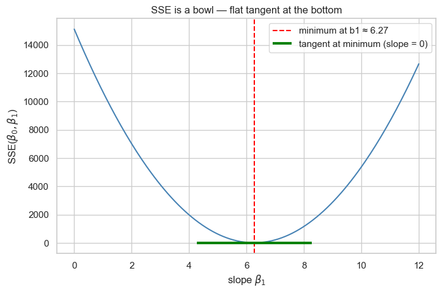
Doing the calculus
Start with $$\text{SSE}(\beta_0, \beta_1) = \sum_{i=1}^n (y_i - \beta_0 - \beta_1 x_i)^2.$$
Take partial derivatives and set each to zero — these are the normal equations:
$$\frac{\partial \text{SSE}}{\partial \beta_0} = -2 \sum_i (y_i - \beta_0 - \beta_1 x_i) = 0$$
$$\frac{\partial \text{SSE}}{\partial \beta_1} = -2 \sum_i x_i (y_i - \beta_0 - \beta_1 x_i) = 0$$
The first equation says the residuals sum to zero. The second says the residuals are uncorrelated with the predictor. Solving for $\beta_0, \beta_1$:
$$\boxed{\;\hat\beta_1 = \frac{\sum_i (x_i - \bar x)(y_i - \bar y)}{\sum_i (x_i - \bar x)^2} = \frac{\operatorname{cov}(x, y)}{\operatorname{var}(x)}\;}$$
$$\boxed{\;\hat\beta_0 = \bar y - \hat\beta_1 \bar x\;}$$
Multiple linear regression (matrix form)
With $p$ predictors, stack the data into a matrix $X$ (shape $n \times (p+1)$, first column all ones for the intercept) and a vector $y$. SSE becomes
$$\text{SSE}(\boldsymbol\beta) = (y - X\boldsymbol\beta)^\top (y - X\boldsymbol\beta).$$
Setting the gradient to zero gives the celebrated normal equation
$$\boxed{\;\hat{\boldsymbol\beta} = (X^\top X)^{-1} X^\top y\;}$$
Let's verify these formulas by computing OLS from scratch and comparing
against statsmodels.
# OLS from scratch — simple linear regression
x_bar, y_bar = hours.mean(), score.mean()
b1_hat = np.sum((hours - x_bar) * (score - y_bar)) / np.sum((hours - x_bar) ** 2)
b0_hat = y_bar - b1_hat * x_bar
print(f"From scratch: b0 = {b0_hat:.4f}, b1 = {b1_hat:.4f}")
# Same thing via statsmodels
X_sm = sm.add_constant(hours)
sm_fit = sm.OLS(score, X_sm).fit()
print(f"statsmodels: b0 = {sm_fit.params[0]:.4f}, b1 = {sm_fit.params[1]:.4f}")
From scratch: b0 = 29.9333, b1 = 6.1394
statsmodels: b0 = 29.9333, b1 = 6.1394
# Draw the fitted line on top of the data
plt.figure(figsize=(7, 5))
plt.scatter(hours, score, s=80, color="steelblue", edgecolor="k", label="data")
xs = np.linspace(hours.min(), hours.max(), 100)
plt.plot(xs, b0_hat + b1_hat * xs, color="red",
label=f"OLS line: y = {b0_hat:.2f} + {b1_hat:.2f} x")
plt.xlabel("Hours studied")
plt.ylabel("Exam score")
plt.title("The OLS line minimizes the sum of squared residuals")
plt.legend()
plt.show()
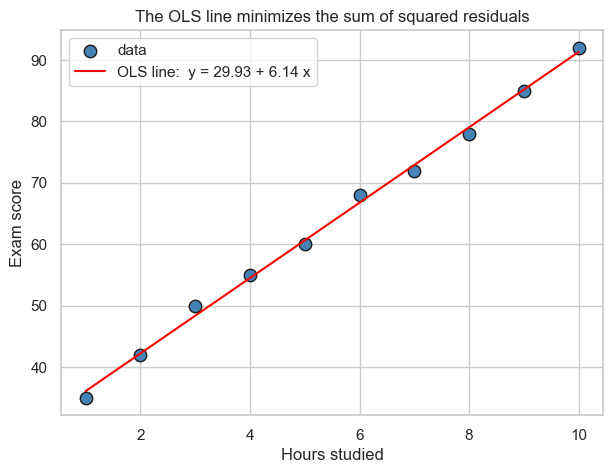
5. A Real Dataset — Advertising Spend vs. Sales
We'll use the classic Advertising dataset from An Introduction to Statistical Learning (James, Witten, Hastie, Tibshirani). Each of 200 rows is a market, with how many (thousand) dollars were spent on TV, radio and newspaper ads, and the resulting sales (in thousands of units).
Business question: How does each advertising channel contribute to sales, and can we predict sales from an advertising budget?
# Try local copy first, fall back to the ISLR mirror
try:
data = pd.read_csv('../datasets/Advertising.csv', index_col=0)
except FileNotFoundError:
data = pd.read_csv('https://www.statlearning.com/s/Advertising.csv',
index_col=0)
data.head()
| TV | radio | newspaper | sales | |
|---|---|---|---|---|
| 1 | 230.1 | 37.8 | 69.2 | 22.1 |
| 2 | 44.5 | 39.3 | 45.1 | 10.4 |
| 3 | 17.2 | 45.9 | 69.3 | 9.3 |
| 4 | 151.5 | 41.3 | 58.5 | 18.5 |
| 5 | 180.8 | 10.8 | 58.4 | 12.9 |
data.shape
(200, 4)
data.describe()
| TV | radio | newspaper | sales | |
|---|---|---|---|---|
| count | 200.000000 | 200.000000 | 200.000000 | 200.000000 |
| mean | 147.042500 | 23.264000 | 30.554000 | 14.022500 |
| std | 85.854236 | 14.846809 | 21.778621 | 5.217457 |
| min | 0.700000 | 0.000000 | 0.300000 | 1.600000 |
| 25% | 74.375000 | 9.975000 | 12.750000 | 10.375000 |
| 50% | 149.750000 | 22.900000 | 25.750000 | 12.900000 |
| 75% | 218.825000 | 36.525000 | 45.100000 | 17.400000 |
| max | 296.400000 | 49.600000 | 114.000000 | 27.000000 |
6. Exploratory Data Analysis
Before fitting, look at:
- Correlations — which predictors move with
sales? Do any predictors move with each other (a warning sign for multicollinearity)? - Scatter plots — is the relationship plausibly linear?
plt.figure(figsize=(7, 5))
sns.heatmap(data.corr(numeric_only=True), cmap="YlGnBu",
annot=True, fmt=".2f")
plt.title("Correlation matrix")
plt.show()
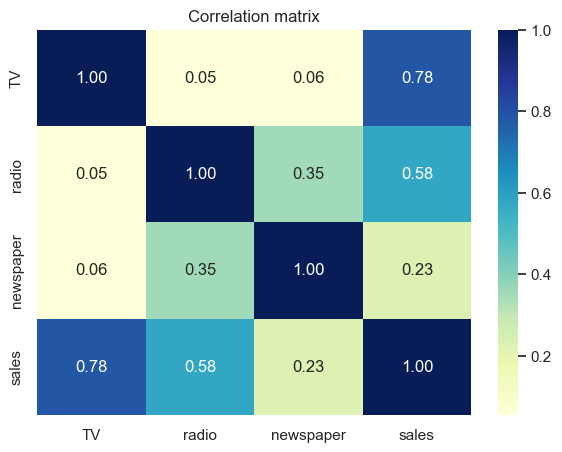
fig, axes = plt.subplots(1, 3, figsize=(14, 4))
for ax, col, color in zip(axes, ['TV', 'radio', 'newspaper'],
['tab:green', 'tab:purple', 'tab:orange']):
ax.scatter(data[col], data['sales'], color=color, alpha=0.7)
ax.set_xlabel(col)
ax.set_ylabel('sales')
ax.set_title(f'{col} vs. sales')
plt.tight_layout()
plt.show()
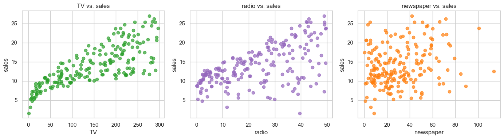
What to notice
TVhas the strongest (and clearly linear) relationship withsales.radiois moderately correlated with sales.newspaperis only weakly correlated with sales and is also somewhat correlated withradio— already a hint of multicollinearity.
7. The Assumptions of Linear Regression
Linear regression is only statistically trustworthy when a short list of assumptions hold. A convenient mnemonic is LINEM:
| Letter | Assumption | Plain-English meaning |
|---|---|---|
| L | Linearity | The true relationship between $X$ and $y$ is linear. |
| I | Independence | Observations (and errors) are independent of each other. No autocorrelation. |
| N | Normality | The residuals are approximately Normally distributed. |
| E | Equal variance | The spread of residuals is constant across fitted values (homoscedasticity). |
| M | No Multicollinearity | Predictors are not (almost) linear combinations of each other. |
Each assumption has a diagnostic that can detect its violation and a remedy that often fixes it. We will see all of them in action.
8. Fitting Multiple Linear Regression with statsmodels
statsmodels is the go-to library for statistical regression in Python
(sklearn is optimized for prediction and gives you fewer diagnostics).
Two important details:
statsmodelsdoes not add an intercept for you. You must callsm.add_constant(X)to get a column of ones.- The call pattern is
sm.OLS(y, X).fit()—ycomes first.
X = data[['TV', 'radio', 'newspaper']]
y = data['sales']
X_const = sm.add_constant(X)
X_const.head(3)
| const | TV | radio | newspaper | |
|---|---|---|---|---|
| 1 | 1.0 | 230.1 | 37.8 | 69.2 |
| 2 | 1.0 | 44.5 | 39.3 | 45.1 |
| 3 | 1.0 | 17.2 | 45.9 | 69.3 |
ols_model = sm.OLS(y, X_const).fit()
print(ols_model.summary())
OLS Regression Results
==============================================================================
Dep. Variable: sales R-squared: 0.897
Model: OLS Adj. R-squared: 0.896
Method: Least Squares F-statistic: 570.3
Date: Sat, 11 Apr 2026 Prob (F-statistic): 1.58e-96
Time: 20:46:55 Log-Likelihood: -386.18
No. Observations: 200 AIC: 780.4
Df Residuals: 196 BIC: 793.6
Df Model: 3
Covariance Type: nonrobust
==============================================================================
coef std err t P>|t| [0.025 0.975]
------------------------------------------------------------------------------
const 2.9389 0.312 9.422 0.000 2.324 3.554
TV 0.0458 0.001 32.809 0.000 0.043 0.049
radio 0.1885 0.009 21.893 0.000 0.172 0.206
newspaper -0.0010 0.006 -0.177 0.860 -0.013 0.011
==============================================================================
Omnibus: 60.414 Durbin-Watson: 2.084
Prob(Omnibus): 0.000 Jarque-Bera (JB): 151.241
Skew: -1.327 Prob(JB): 1.44e-33
Kurtosis: 6.332 Cond. No. 454.
==============================================================================
Notes:
[1] Standard Errors assume that the covariance matrix of the errors is correctly specified.
9. Reading the OLS Summary — Block by Block
The summary table looks intimidating, but every number has a job.
Top block — model-level statistics
| Field | What it means |
|---|---|
| Dep. Variable | The column we are predicting (sales). |
| Model | OLS — Ordinary Least Squares. |
| No. Observations | $n$ — number of rows used. |
| Df Residuals | $n - p - 1$ — degrees of freedom for residuals. |
| Df Model | $p$ — number of predictors (not counting the intercept). |
| R-squared | Fraction of variance in $y$ explained by the model: $1 - \text{SSE}/\text{SST}$. Ranges $[0, 1]$. |
| Adj. R-squared | R² penalized for adding predictors. Use this when comparing models with different numbers of features. |
| F-statistic / Prob (F-stat) | Tests $H_0$: all slopes are zero. Small p-value ⇒ the model is jointly useful. |
| Log-Likelihood / AIC / BIC | Used to compare alternative models (lower AIC/BIC is better). |
Middle block — per-coefficient table
| Column | What it means |
|---|---|
| coef | $\hat\beta_j$ — the estimated slope. "Holding everything else fixed, a one-unit increase in $x_j$ changes the prediction by this much." |
| std err | Standard error of $\hat\beta_j$ — our uncertainty about the slope. |
| t | $\hat\beta_j / \text{std err}$ — the $t$-statistic. |
| P>|t| | Two-sided p-value for $H_0: \beta_j = 0$. Small ⇒ the predictor is statistically significant. |
| [0.025, 0.975] | 95% confidence interval for $\beta_j$. If it crosses zero, the coefficient is not significant at the 5% level. |
Bottom block — diagnostics baked into the summary
| Field | What it means |
|---|---|
| Omnibus / Prob(Omnibus) | Joint test of skewness + kurtosis of residuals. Small p-value ⇒ non-normal residuals. |
| Skew | Asymmetry of residuals. 0 = symmetric. |
| Kurtosis | "Tailedness". 3 = Normal. |
| Jarque–Bera / Prob(JB) | Another normality test, based on skew and kurtosis. |
| Durbin–Watson | Autocorrelation of residuals. ≈ 2 is good. < 1.5 or > 2.5 is suspicious. |
| Cond. No. | Condition number of $X^\top X$. Very large (> 30) ⇒ possible multicollinearity or ill-scaled features. |
What does our model say?
- $R^2 \approx 0.90$: the three ad channels jointly explain about 90% of the variance in sales. Very good.
- TV ($p < 0.001$) and radio ($p < 0.001$) are strongly significant.
- newspaper has a coefficient close to zero and a very large p-value — once TV and radio are in the model, newspaper adds essentially nothing.
- Durbin–Watson $\approx 2$: no obvious autocorrelation.
- Omnibus / JB p-values are tiny ⇒ residuals may not be perfectly Normal — we will check this visually in a moment.
10. Regression Diagnostics
The summary tells us whether the model fits. Diagnostics tell us whether we are allowed to trust the summary.
We'll compute the residuals once and reuse them.
y_pred = ols_model.predict(X_const)
residuals = y - y_pred
residuals.describe()
count 2.000000e+02
mean 5.506706e-16
std 1.672757e+00
min -8.827687e+00
25% -8.908135e-01
50% 2.418018e-01
75% 1.189319e+00
max 2.829223e+00
dtype: float64
10.1 Residuals vs. Fitted — Linearity and Homoscedasticity
Plot residuals on the $y$-axis against fitted values on the $x$-axis.
What to look for:
- Linearity: residuals should scatter randomly around zero with no curved trend. A U-shape or inverted-U means the relationship is not really linear.
- Equal variance: the vertical spread should be roughly the same across the whole $x$-range. A fanning out pattern signals heteroscedasticity.
plt.figure(figsize=(8, 5))
sns.residplot(x=y_pred, y=residuals, lowess=True,
line_kws={'color': 'red', 'lw': 2})
plt.axhline(0, color='gray', linestyle='--')
plt.xlabel('Fitted values')
plt.ylabel('Residuals')
plt.title('Residuals vs. Fitted')
plt.show()
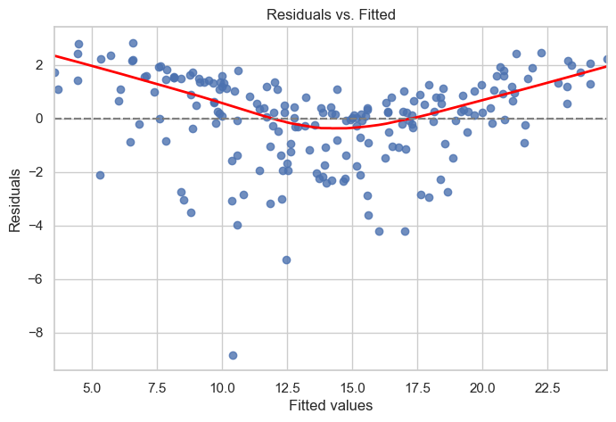
Notice the slight curvature of the red LOWESS line and the lower tail of large negative residuals on the left — the model underpredicts small sales and the relationship has a mild non-linear component (interaction between TV and radio is the real culprit).
10.2 Q–Q Plot — Normality of residuals
A Quantile–Quantile plot compares the quantiles of the residuals to the quantiles of a standard Normal. If the residuals are Normally distributed, the points lie on the 45° line.
sm.qqplot(residuals, line="45", fit=True)
plt.title("Normal Q–Q plot of residuals")
plt.show()
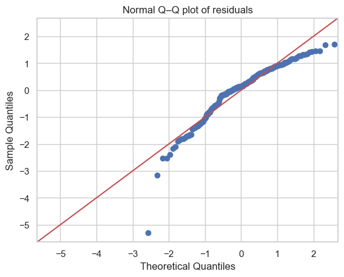
10.3 Histogram / density of residuals
Another way to eyeball normality. We also overlay a Normal curve with the same mean and std for reference.
plt.figure(figsize=(8, 5))
sns.histplot(residuals, kde=True, stat='density',
color='steelblue', edgecolor='k')
xs = np.linspace(residuals.min(), residuals.max(), 200)
plt.plot(xs, stats.norm.pdf(xs, residuals.mean(), residuals.std()),
color='red', lw=2, label='Normal reference')
plt.xlabel('Residuals')
plt.title('Distribution of residuals')
plt.legend()
plt.show()
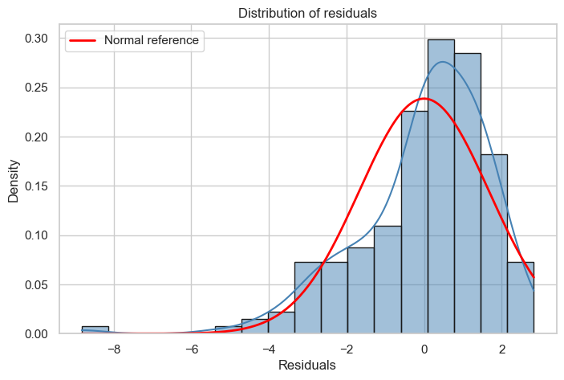
10.4 Scale–Location plot — equal variance, another angle
This plots $\sqrt{|\text{standardized residual}|}$ vs. fitted value. A flat horizontal trend means constant variance.
influence = ols_model.get_influence()
std_resid = influence.resid_studentized_internal
plt.figure(figsize=(8, 5))
plt.scatter(y_pred, np.sqrt(np.abs(std_resid)), alpha=0.7)
sns.regplot(x=y_pred, y=np.sqrt(np.abs(std_resid)),
scatter=False, lowess=True,
line_kws={'color': 'red'})
plt.xlabel('Fitted values')
plt.ylabel(r'$\sqrt{|\mathrm{standardized\ residual}|}$')
plt.title('Scale–Location')
plt.show()
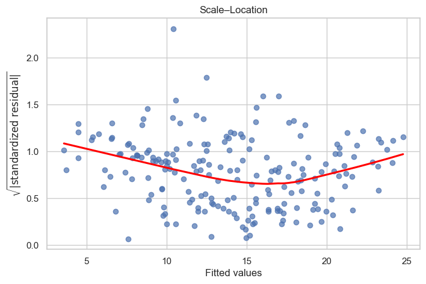
10.5 Variance Inflation Factor (VIF) — multicollinearity
Multicollinearity happens when one predictor can be (almost) predicted from the others. It inflates the variance of the coefficient estimates, making individual p-values unreliable — the overall $R^2$ can still be high while each individual coefficient looks useless.
The VIF for predictor $j$ is $$\text{VIF}_j = \frac{1}{1 - R_j^2}$$ where $R_j^2$ is the $R^2$ of regressing $x_j$ on all other predictors.
Rules of thumb: VIF $< 5$ fine, $5$–$10$ suspicious, $> 10$ serious.
vif = pd.DataFrame({
'feature': X.columns,
'VIF': [variance_inflation_factor(X.values, i)
for i in range(X.shape[1])]
})
vif
| feature | VIF | |
|---|---|---|
| 0 | TV | 2.486772 |
| 1 | radio | 3.285462 |
| 2 | newspaper | 3.055245 |
All VIFs are comfortably below 5 — multicollinearity is not a serious problem for this dataset.
10.6 Cook's Distance — influential observations
A point is influential if removing it would noticeably change the fitted coefficients. Cook's distance combines leverage (how unusual $x_i$ is) and residual size. A common rule of thumb flags observations with
$$D_i > \frac{4}{n}.$$
c, _ = influence.cooks_distance
n = len(c)
plt.figure(figsize=(8, 5))
plt.stem(np.arange(n), c, markerfmt=",", basefmt=" ")
plt.axhline(4 / n, color='red', linestyle='--',
label='threshold 4/n')
plt.xlabel('Observation index')
plt.ylabel("Cook's distance")
plt.title("Cook's distance per observation")
plt.legend()
plt.show()
print("Observations above the 4/n threshold:",
np.where(c > 4 / n)[0].tolist())
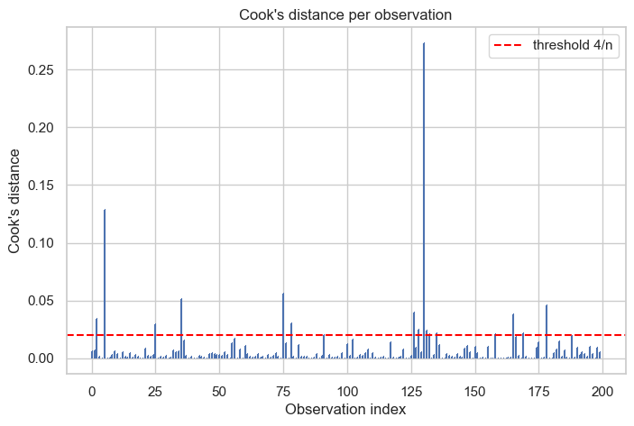
Observations above the 4/n threshold: [2, 5, 25, 35, 75, 78, 126, 128, 130, 131, 132, 135, 158, 165, 169, 178]
10.7 Formal statistical tests
Plots are great for building intuition, but sometimes you want a number. Three standard tests:
| Test | $H_0$ | Decision rule |
|---|---|---|
| Breusch–Pagan | errors are homoscedastic | reject if $p < 0.05$ ⇒ heteroscedastic |
| Shapiro–Wilk | residuals are Normal | reject if $p < 0.05$ ⇒ non-Normal |
| Durbin–Watson | no autocorrelation | statistic $\approx 2$ = OK; near 0 = positive autocorrelation; near 4 = negative |
# Breusch-Pagan: homoscedasticity
bp = het_breuschpagan(residuals, X_const)
bp_labels = ['LM stat', 'LM p-value', 'F stat', 'F p-value']
print("Breusch–Pagan:")
for lab, val in zip(bp_labels, bp):
print(f" {lab:10s} = {val:.4f}")
print(" -> p > 0.05 means we fail to reject homoscedasticity.\n")
# Shapiro-Wilk: normality
sw_stat, sw_p = stats.shapiro(residuals)
print(f"Shapiro–Wilk: W = {sw_stat:.4f}, p = {sw_p:.3e}")
print(" -> p < 0.05 means residuals are NOT Normal.\n")
# Durbin-Watson: autocorrelation
dw = durbin_watson(residuals)
print(f"Durbin–Watson: DW = {dw:.4f}")
print(" -> Close to 2 means no autocorrelation.")
Breusch–Pagan:
LM stat = 5.1329
LM p-value = 0.1623
F stat = 1.7209
F p-value = 0.1640
-> p > 0.05 means we fail to reject homoscedasticity.
Shapiro–Wilk: W = 0.9177, p = 3.939e-09
-> p < 0.05 means residuals are NOT Normal.
Durbin–Watson: DW = 2.0836
-> Close to 2 means no autocorrelation.
10.8 A diagnostic summary
Let's collect everything into one compact verdict.
print("================ DIAGNOSTIC SUMMARY ================")
print(f"R² : {ols_model.rsquared:.4f}")
print(f"Adjusted R² : {ols_model.rsquared_adj:.4f}")
print(f"F-statistic p : {ols_model.f_pvalue:.3e}")
print(f"Durbin–Watson : {dw:.4f} "
f"({'OK' if 1.5 < dw < 2.5 else 'SUSPICIOUS'})")
print(f"Breusch–Pagan p : {bp[1]:.4f} "
f"({'homoscedastic' if bp[1] > 0.05 else 'HETEROSCEDASTIC'})")
print(f"Shapiro–Wilk p : {sw_p:.3e} "
f"({'normal' if sw_p > 0.05 else 'NOT normal'})")
print("VIFs:")
print(vif.to_string(index=False))
print("====================================================")
================ DIAGNOSTIC SUMMARY ================
R² : 0.8972
Adjusted R² : 0.8956
F-statistic p : 1.575e-96
Durbin–Watson : 2.0836 (OK)
Breusch–Pagan p : 0.1623 (homoscedastic)
Shapiro–Wilk p : 3.939e-09 (NOT normal)
VIFs:
feature VIF
TV 2.486772
radio 3.285462
newspaper 3.055245
====================================================
11. Remedial Measures — What to Do When Assumptions Fail
| Problem seen in diagnostics | Usual remedy |
|---|---|
| Non-linearity (curved residual plot) | Add polynomial / interaction terms, or transform $x$ (e.g. $\log x$, $\sqrt{x}$). |
| Heteroscedasticity (fanning residuals) | Transform $y$ (often $\log y$ or Box–Cox), or fit Weighted Least Squares. |
| Non-normal residuals | Transform $y$, drop extreme outliers after investigation, or use robust regression. |
| Multicollinearity (high VIF) | Drop one of the correlated predictors, combine them, or use Ridge regression. |
| Influential points (Cook's D large) | Investigate them — is it bad data? a rare but real case? Consider robust regression. |
| Autocorrelation (DW far from 2) | Use time-series models (ARIMA, Newey–West standard errors). |
11.1 A concrete example — when a straight line just isn't enough
Consider this toy dataset of reaction yield vs. temperature. A straight line will not be enough — we'll need a polynomial feature to capture the curvature.
poly_data = pd.DataFrame({
'temp': [0, 20, 40, 60, 80, 100],
'yield': [0.0020, 0.0012, 0.0060, 0.0300, 0.0900, 0.2700],
})
poly_data
| temp | yield | |
|---|---|---|
| 0 | 0 | 0.0020 |
| 1 | 20 | 0.0012 |
| 2 | 40 | 0.0060 |
| 3 | 60 | 0.0300 |
| 4 | 80 | 0.0900 |
| 5 | 100 | 0.2700 |
xp = poly_data['temp'].values
yp = poly_data['yield'].values
# Simple linear regression
lin_fit = sm.OLS(yp, sm.add_constant(xp)).fit()
# Polynomial regression (degree 3) — still linear in the *coefficients*!
X_poly = np.column_stack([xp, xp ** 2, xp ** 3])
poly_fit = sm.OLS(yp, sm.add_constant(X_poly)).fit()
xs = np.linspace(xp.min(), xp.max(), 200)
lin_curve = lin_fit.params[0] + lin_fit.params[1] * xs
poly_curve = (poly_fit.params[0] +
poly_fit.params[1] * xs +
poly_fit.params[2] * xs ** 2 +
poly_fit.params[3] * xs ** 3)
plt.figure(figsize=(8, 5))
plt.scatter(xp, yp, s=80, color='k', label='data', zorder=3)
plt.plot(xs, lin_curve, color='red', lw=2, label=f'linear (R²={lin_fit.rsquared:.2f})')
plt.plot(xs, poly_curve, color='green', lw=2, label=f'cubic (R²={poly_fit.rsquared:.2f})')
plt.xlabel('temperature')
plt.ylabel('yield')
plt.title('Polynomial features rescue a non-linear relationship')
plt.legend()
plt.show()
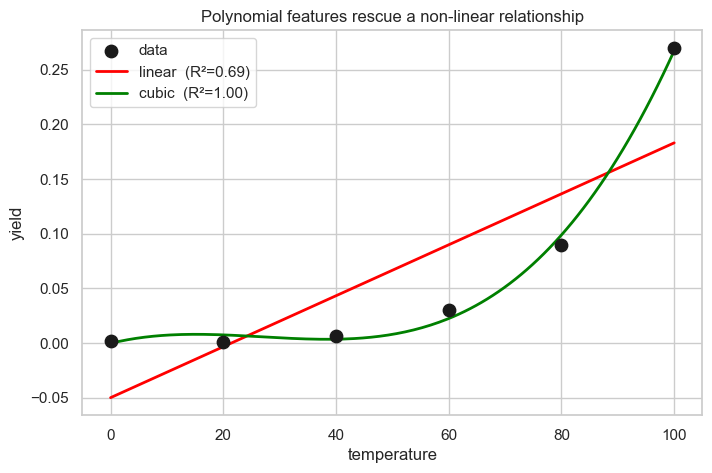
Key insight: "Linear regression" means linear in the coefficients, not linear in the raw inputs. We can freely add $x^2$, $x^3$, $\log x$, $x_1 \cdot x_2$ (interactions), etc. and still fit them with OLS.
11.2 Dropping a non-significant / collinear predictor
Earlier we saw newspaper was not significant. Let's refit without it and
compare Adjusted $R^2$ (the honest metric when removing features).
X2 = sm.add_constant(data[['TV', 'radio']])
fit2 = sm.OLS(data['sales'], X2).fit()
print(f"Original R² = {ols_model.rsquared:.4f} "
f"Adj R² = {ols_model.rsquared_adj:.4f}")
print(f"Reduced R² = {fit2.rsquared:.4f} "
f"Adj R² = {fit2.rsquared_adj:.4f}")
Original R² = 0.8972 Adj R² = 0.8956
Reduced R² = 0.8972 Adj R² = 0.8962
Adjusted $R^2$ actually goes up when we drop newspaper — a cleaner,
simpler, equally-good model. That is a successful remedial step.
12. Key Takeaways
- Regression is curve fitting with uncertainty. Linear regression picks the straight line / flat plane that minimizes the sum of squared residuals.
- The derivative-equals-zero trick finds the minimum because at the bottom of a smooth bowl there is no direction to move to decrease the value — the tangent is flat.
statsmodelsis your friend for inference — it gives you the OLS summary with coefficients, standard errors, p-values and diagnostics.- Never trust a model you haven't diagnosed. Residual plots, Q–Q plots, VIF, Cook's distance and the formal tests catch different assumption violations.
- Remedies usually exist: transform variables, add polynomial or interaction terms, drop collinear predictors, use WLS or robust regression. Pick the remedy that targets the specific violation.
13. Practice Exercises
Try these on your own — they reuse the same Advertising dataset.
- Fit a model of
saleson onlyTV. Interpret the slope: what does it say about the ROI of one extra unit of TV advertising? - Add an interaction term
TV * radioto the full model. Does the coefficient turn out significant? What does it mean in plain English? - Apply $\log(1 + \text{newspaper})$ as a transformation and refit. Does the diagnostic picture improve?
- Re-run the full diagnostic battery on the reduced
TV + radiomodel. Which assumptions look healthier? Which (if any) still look bad? - Construct a synthetic dataset where Cook's distance flags a single influential point. Show how removing it changes the fitted slope.